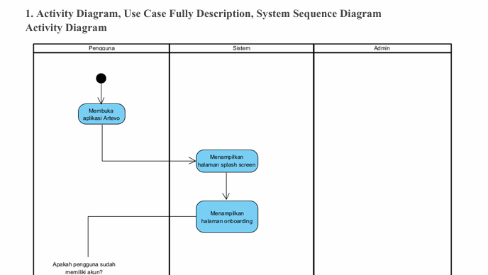
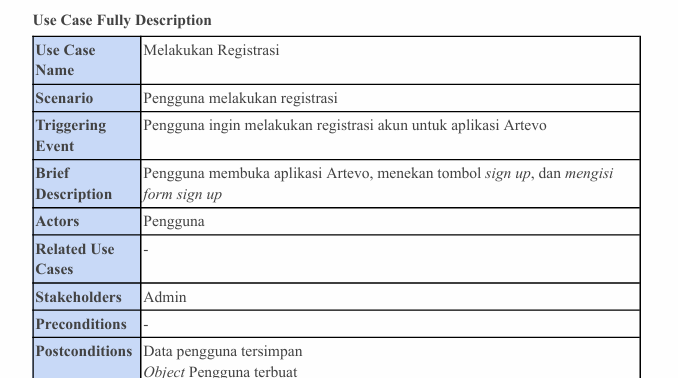
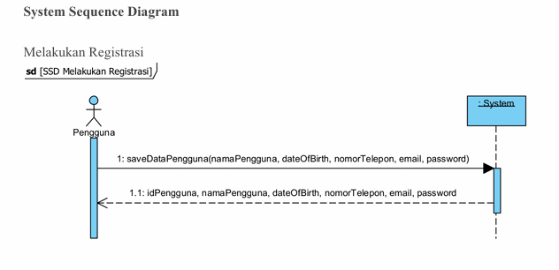

About the Project
Artevo was my 3rd-semester project for the Information System Analysis and Design course. This application is designed as a painting services system, with a focus on system design through UML (use case diagrams, activity diagrams, sequence diagrams, etc.). Artevo supports various features such as user registration & login, painting purchases, and has a social media-style interface focused on art.
For more details, please download the project documentation below.
View Full Documentation (ZIP)Visual Gallery
A few screenshots from the Artevo project.


